Первый этап
Для создания основы детали создаем эскиз и при помощи инструментов чертим основу тела вращения, ось вращения.
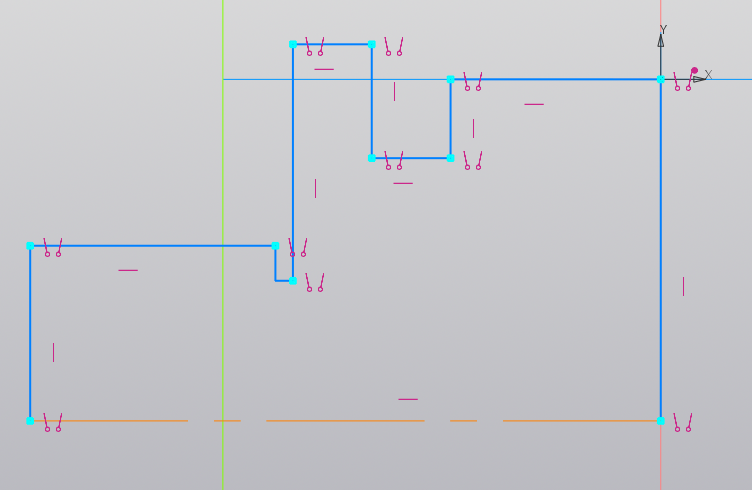
ШТУЦЕР |
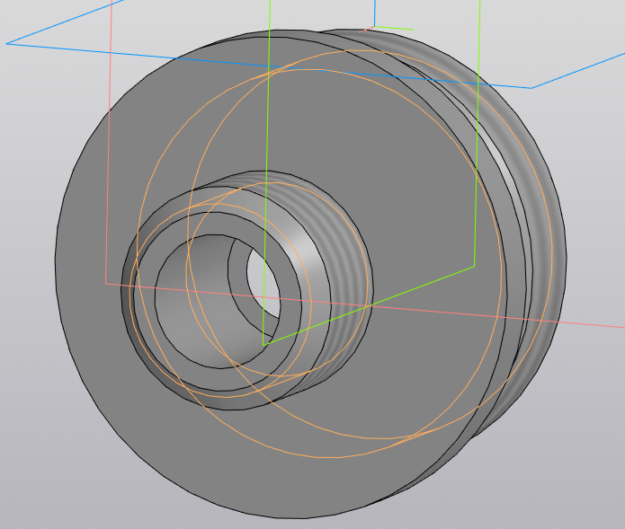 |
Первый этапДля создания основы детали создаем эскиз и при помощи инструментов чертим основу тела вращения, ось вращения. 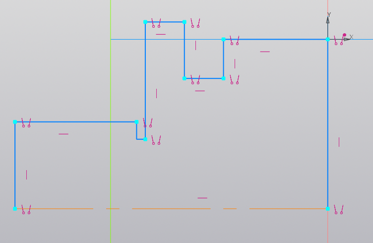 |
Второй этапИспользуем команду “элемент вращения” по отношению к эскизу на 360°. 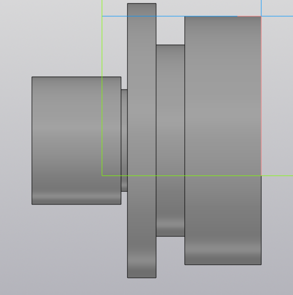 |
Третий этапС помощью команды “фаска” создаем 4 фаски 2х45°. 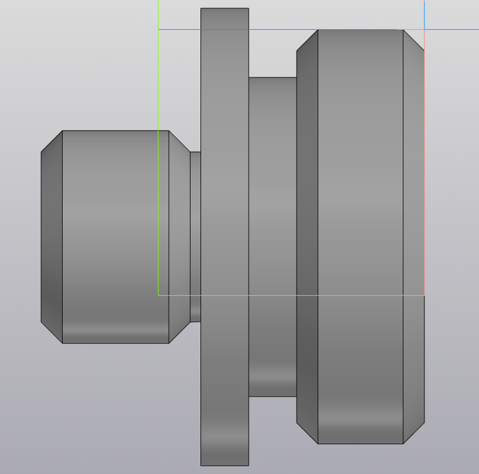 |
Четвертый этапНа обеих сторонах цилиндра создаем эскизы. При помощи инструментов чертим окружности диаметрами 19 и 30 мм. – тела выдавливания. С помощью команды “вырезать выдавливанием” вырезаем цилиндры на 17 и 19 мм в длину соответственно. 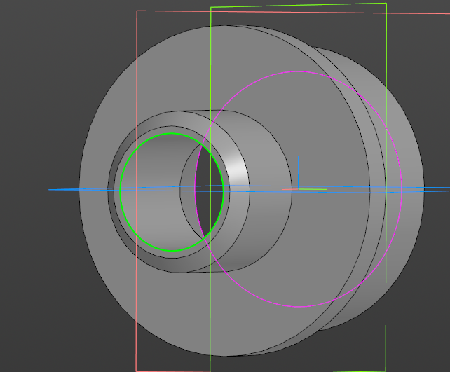 |
Пятый этапС помощью команды “условное изображение резьбы” создадим метрическую резьбу на М20 и М39 мм длинами 14 и 12 мм соответственно. 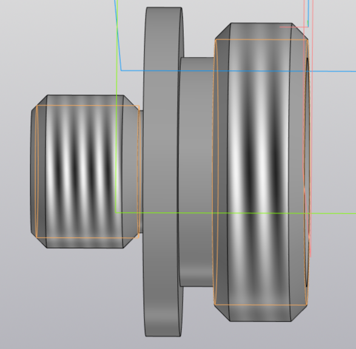 |
НИППЕЛЬ |
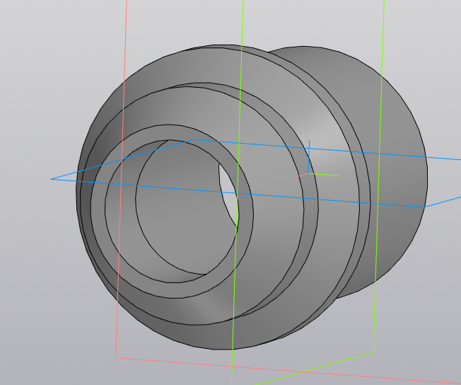 |
Первый этапДля создания основы детали создаем эскиз и при помощи инструментов чертим основу тела вращения, ось вращения. 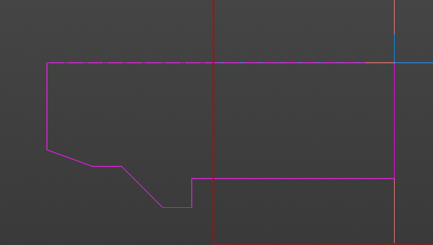 |
Второй этапИспользуем команду “элемент вращения” по отношению к эскизу на 360°. 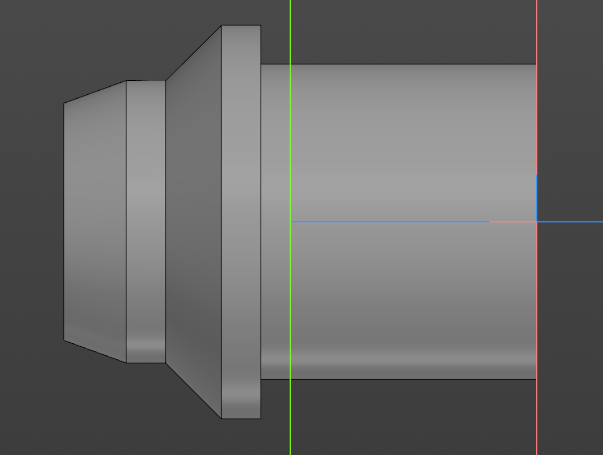 |
Третий этапНа обеих сторонах цилиндра создаем эскизы. При помощи инструментов чертим окружности диаметрами 18 и 24 мм. – тела выдавливания. С помощью команды “вырезать выдавливанием” вырезаем цилиндры на 11 и 32 мм в длину соответственно. Между ними вырезаем цилиндр длиной 5 мм с углом 15°. 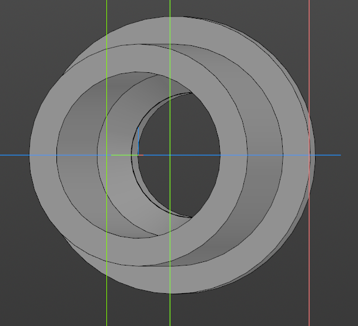 |
ГАЙКА |
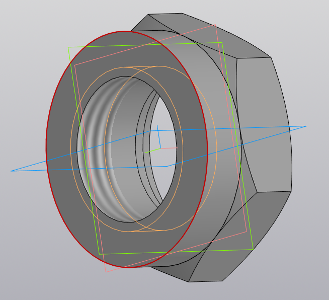 |
Первый этапДля создания основы детали создаем эскиз и при помощи инструментов чертим шестигранник диаметром 56 мм. – тело выдавливания 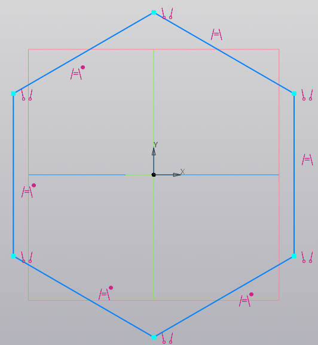 |
Второй этапИспользуем команду “элемент выдавливания” на расстояние на 16 мм. 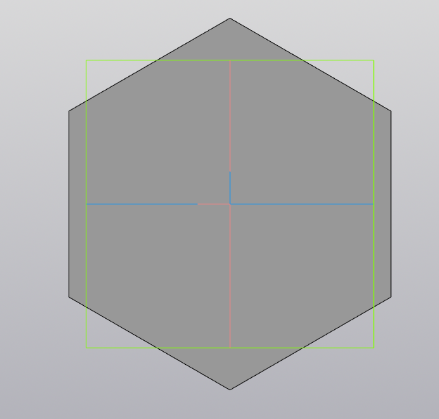 |
Третий этапСоздаем эскиз на боковой грани шестигранника и чертим с помощью инструментов треугольник с углом 30° для будущей фаски. Отзеркаливаем на другую сторону. 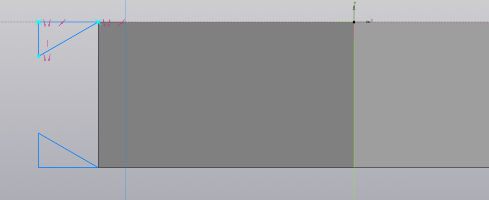 |
Четвертый этапС помощью команды “вырезать выдавливанием” вырезаем по оси Х. Так, создали две фаски 2×30°. 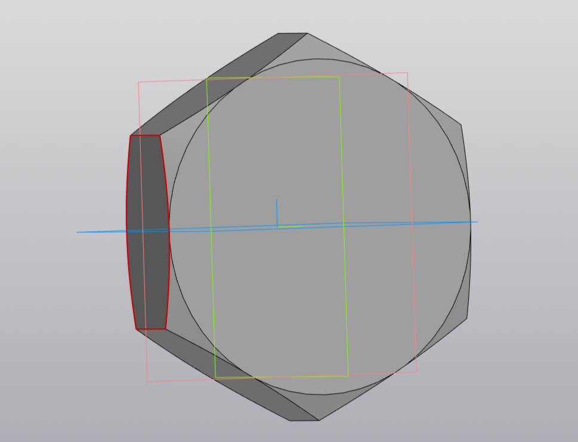 |
Пятый этапСоздаем эскиз на одной из сторон шестигранника и при помощи инструментов чертим окружность диаметром 56 мм. – тело выдавливания. Выдавливаем с помощью команды “элемент выдавливания” на 11 мм. 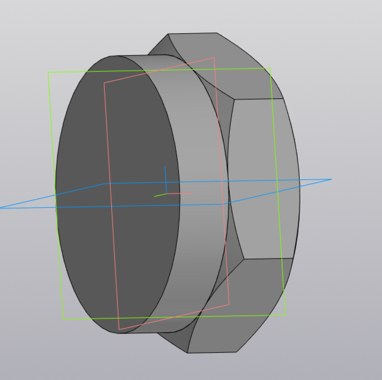 |
Шестой этапНа окружности создаем эскиз. При помощи инструментов чертим окружность диаметром 34 мм. – тела выдавливания. С помощью команды “вырезать выдавливанием” вырезаем цилиндр на 11 мм в длину. С помощью команды “условное изображение резьбы” создадим метрическую резьбу на М39 мм длиной 11 мм. 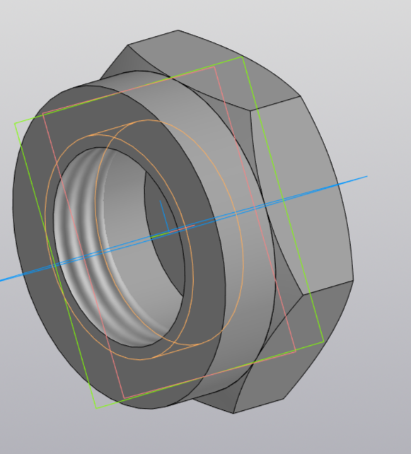 |
Седьмой этапС другой стороны на шестиграннике создаем эскиз и с помощью инструментов чертим окружность диаметром 42 мм, используем команду “вырезать выдавливанием” в длину на 4 мм. Затем создаем эскиз и с помощью инструментов чертим окружность диаметром 38 мм, используем команду “вырезать выдавливанием” в длину на 4 мм. 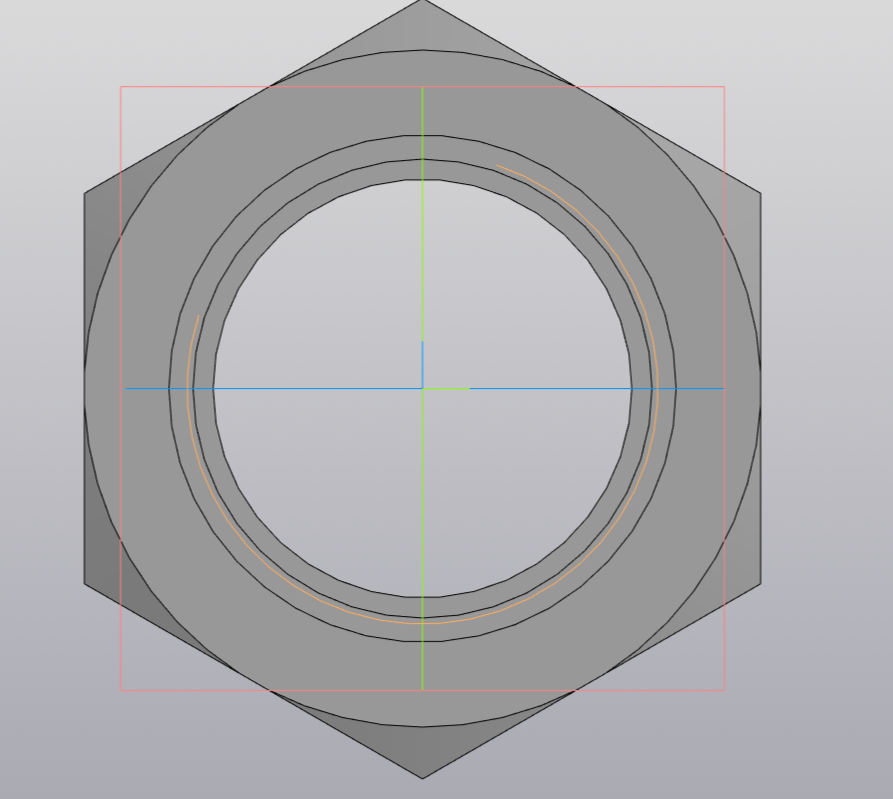 |
СБОРКА |
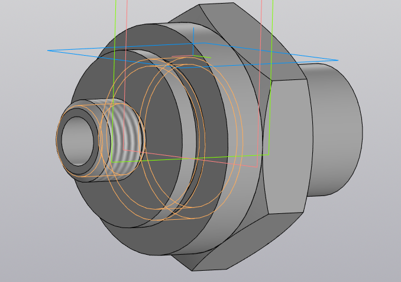 |
Первый этапВ штуцер устанавливается ниппель 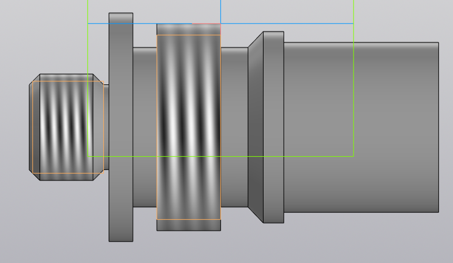 |
Второй этапНиппель фиксируется в штуцере закручивающейся Гайкой 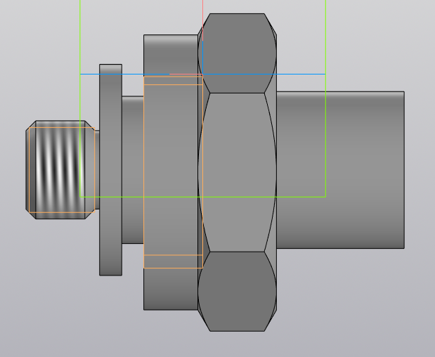 |